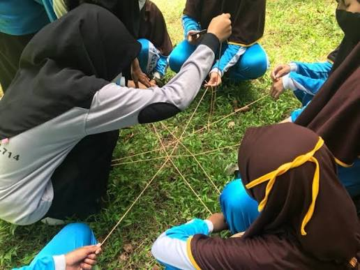

Memilih vendor outbound LDKS Malang yang tepat berarti mempertimbangkan pengalaman vendor, standar keamanan, kesesuaian program dengan tujuan kepemimpinan, dan fleksibilitas anggaran sekolah.
Ringkasan Inti
- Pengalaman vendor menangani kegiatan sekolah menjadi indikator utama kredibilitas
- Standar keamanan mencakup peralatan, rasio instruktur, dan prosedur darurat
- Program LDKS idealnya disesuaikan dengan jenjang dan tujuan sekolah
- Biaya LDKS outbound dipengaruhi durasi, lokasi, dan jumlah peserta
- Konsultasi awal membantu memastikan kecocokan program sebelum kegiatan berlangsung
Apa Kriteria Utama Memilih Vendor Outbound LDKS di Malang?
Kriteria utama memilih vendor outbound LDKS di Malang adalah pengalaman menangani sekolah, standar keamanan yang jelas, dan kemampuan menyesuaikan program dengan tujuan kepemimpinan yang ingin dicapai.
Sekolah sebaiknya menelusuri rekam jejak vendor, termasuk jenis sekolah yang pernah ditangani dan skala peserta yang biasa mereka layani. Vendor yang berpengalaman biasanya memiliki modul kegiatan yang terstruktur, mulai dari ice breaking, simulasi kepemimpinan, hingga sesi refleksi, bukan sekadar rangkaian permainan tanpa tujuan jelas.
Selain pengalaman, kejelasan standar operasional prosedur juga penting diperhatikan, termasuk bagaimana vendor menangani situasi darurat seperti cuaca buruk atau kondisi kesehatan peserta yang mendadak menurun selama kegiatan berlangsung.

Diskusi awal dengan vendor outbound sangat krusial untuk memastikan keselamatan dan efektivitas program sesuai dengan visi sekolah.
Apa Saja yang Mempengaruhi Biaya LDKS Outbound di Malang?
Biaya LDKS outbound di Malang umumnya dipengaruhi oleh durasi kegiatan, jumlah peserta, lokasi yang dipilih, serta kelengkapan fasilitas seperti konsumsi dan akomodasi.
Beberapa komponen yang biasanya menyusun struktur biaya meliputi:
- Sewa lokasi dan fasilitas dasar seperti aula atau area camping ground
- Honor instruktur atau fasilitator lapangan
- Peralatan permainan dan perlengkapan keselamatan
- Konsumsi peserta selama kegiatan berlangsung
- Akomodasi apabila kegiatan berlangsung lebih dari satu hari
Biaya dapat bervariasi tergantung kompleksitas program dan jumlah peserta, sehingga sekolah disarankan meminta rincian penawaran dari beberapa vendor, termasuk Gemilang Katun Outbound, sebagai bahan perbandingan sebelum menetapkan pilihan akhir.
Bagaimana Memastikan Keamanan Kegiatan LDKS Outbound?
Keamanan kegiatan LDKS outbound dapat dipastikan melalui pengecekan standar peralatan, rasio instruktur terhadap peserta, dan kejelasan prosedur penanganan darurat sebelum kegiatan dimulai.
Sekolah sebaiknya meminta penjelasan detail mengenai jenis permainan yang akan dilakukan, termasuk tingkat risiko masing-masing aktivitas dan langkah mitigasi yang disiapkan vendor. Rasio instruktur terhadap jumlah peserta juga menjadi indikator penting, karena rasio yang terlalu rendah dapat menyulitkan pengawasan saat kegiatan berlangsung di area terbuka.
Selain itu, penting untuk memastikan adanya briefing keselamatan di awal kegiatan serta kesiapan pertolongan pertama apabila terjadi insiden ringan selama sesi permainan berlangsung.
Bagaimana Menyesuaikan Program LDKS dengan Tujuan Sekolah?
Program LDKS dapat disesuaikan dengan tujuan sekolah melalui diskusi awal antara panitia dan vendor mengenai fokus materi, karakter peserta, dan hasil yang ingin dicapai setelah kegiatan.
Sebelum menetapkan rundown, sekolah sebaiknya menyampaikan tujuan spesifik, misalnya penguatan kekompakan pengurus OSIS baru atau pelatihan pengambilan keputusan dalam kondisi tekanan waktu. Vendor yang responsif biasanya dapat menyesuaikan jenis permainan dan sesi diskusi agar selaras dengan tujuan tersebut, alih-alih menggunakan modul generik yang sama untuk semua sekolah.
Komunikasi dua arah ini penting agar hasil kegiatan benar-benar relevan dengan kebutuhan pengembangan kepemimpinan siswa di sekolah masing-masing.
Kesimpulan
Memilih vendor outbound LDKS di Malang sebaiknya didasarkan pada pengalaman, standar keamanan, dan kemampuan penyesuaian program, bukan semata-mata harga termurah. Sekolah disarankan membandingkan beberapa penawaran, termasuk dari Gemilang Katun Outbound, serta melakukan konsultasi awal untuk memastikan program benar-benar sesuai dengan tujuan pengembangan kepemimpinan siswa.
FAQ
Sekolah sebaiknya menanyakan pengalaman vendor, standar keamanan, rincian biaya, dan fleksibilitas penyesuaian program dengan tujuan kegiatan.
Tidak, biaya dapat bervariasi tergantung durasi, jumlah peserta, lokasi, dan fasilitas tambahan yang dipilih sekolah.
Survei lokasi disarankan untuk memastikan kesiapan area dan mengidentifikasi potensi risiko sebelum kegiatan berlangsung.